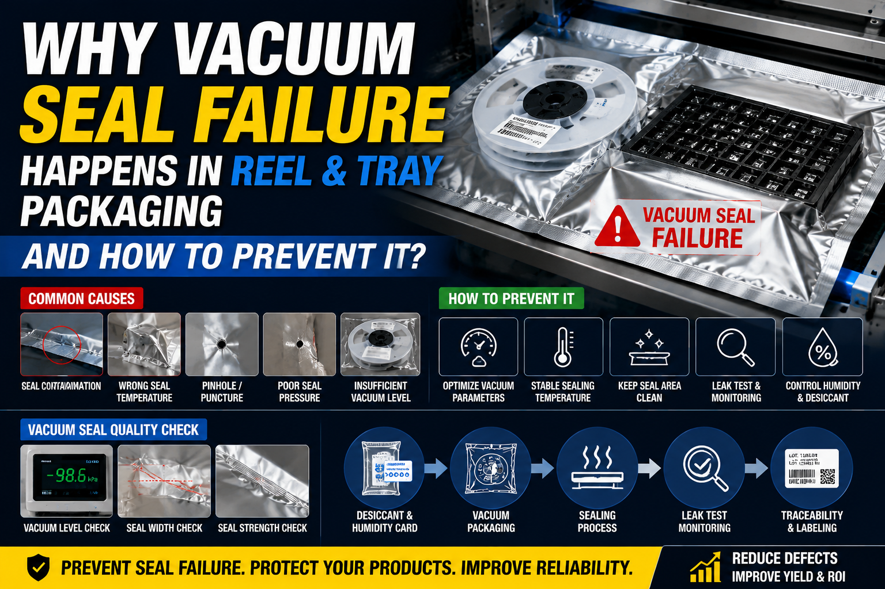

Why Vacuum Seal Failure Happens in Reel and Tray Packaging and How to Prevent It in High-Precision Electronics Manufacturing Lines？

Summary
Vacuum sealing failure is one of the most critical quality risks in Reel and Tray packaging for semiconductor, LED, and precision electronics manufacturing. A single sealing defect can lead to moisture damage, oxidation, and product failure in downstream processes. This article analyzes the root causes of vacuum seal failure and provides engineering-level prevention strategies including equipment design, material selection, process control, and MES integration.
Technology
- 1.Vacuum sealing pressure control technology
- 2.Multi-stage vacuum extraction system
- 3.Aluminum foil moisture barrier packaging system
- 4.Thermal sealing temperature stability control
- 5.Leak detection and pressure decay monitoring
- 6.MES-based process traceability system
- 7.Humidity and desiccant control integration
- 8.Reel & Tray standardized packaging interface design
- 9.PLC-controlled sealing synchronization
- 10.Clean environment packaging system design
Challenge
In electronics and semiconductor packaging, vacuum seal failure is a hidden but extremely costly problem.
Typical issues include:
1.Microscopic air leakage after sealing
2.Inconsistent sealing temperature across batches
3.Aluminum bag material variation
4.Operator-dependent sealing quality variation
5.Tray deformation affecting sealing alignment
6.Insufficient vacuum level for moisture-sensitive components
7.Poor environmental humidity control during packaging
8.Lack of real-time defect detection
These problems often lead to:
1.Moisture damage (MSL failure)
2.Oxidation of electronic components
3.Rejection during SMT or assembly process
4.Customer complaints and return loss
5.High hidden quality costs
Even a small failure rate can cause millions in downstream losses in semiconductor supply chains.
Solution
To solve vacuum seal failure, we propose a system-level engineering approach instead of machine-level optimization only.
The solution includes:
1.Fully controlled multi-stage vacuum sealing system
2.Standardized Reel & Tray mechanical interface design
3.Stable thermal sealing module with feedback control
4.Integrated desiccant and humidity card insertion system
5.Clean dry air (CDA) controlled packaging environment
6.MES-linked sealing parameter traceability
7.Automatic leak detection system (pressure decay test)
Key principle:
👉 Vacuum sealing quality is not only a machine issue—it is a full system design problem.
Workflow & Layout
A complete vacuum packaging workflow for Reel & Tray system:
Step 1: Incoming Material Verification
Reel/Tray barcode scanning
MES data validation
Moisture sensitivity classification
Step 2: Pre-Packaging Environment Control
Humidity-controlled packaging zone
Anti-static environment protection
Temperature stabilization
Step 3: Desiccant & Humidity Card Insertion
Automatic desiccant dispensing
Humidity indicator card placement
Quantity verification
Step 4: Aluminum Bag Packaging
Reel/Tray insertion into barrier bag
Alignment correction system
Multi-layer bag positioning
Step 5: Vacuum Extraction Process
Pre-vacuum stage (air removal)
Main vacuum stage (deep sealing)
Stabilization pressure holding
Step 6: Thermal Sealing
Multi-zone heating sealing
Pressure compensation system
Real-time temperature feedback
Step 7: Leak Detection
Pressure decay monitoring
Seal integrity verification
Automatic rejection system
Step 8: Secondary Packaging
Carton packaging
Label printing
Traceability coding
Results & ROI
- After implementing a controlled vacuum sealing system:
- 1
- Seal failure rate reduced from 3–8% → <0.3%
- 2.Moisture-related product defects reduced by 70%+
- 3.Customer return rate reduced significantly
- 4.Packaging line efficiency increased 30–60%
- 5.Material waste reduced 20–40%
- 6.ROI achieved within 12–18 months
Equipment List
- 1.Automatic Reel & Tray vacuum packaging machine
- 2.Multi-stage vacuum pump system
- 3.Thermal sealing control unit
- 4.Aluminum foil bag feeding system
- 5.Desiccant dispensing machine
- 6.Humidity indicator card inserter
- 7.Leak detection system (pressure decay tester)
- 8.MES data integration system
- 9.Environmental humidity control system
- 10.Conveyor and buffer system
- 11.PLC + SCADA control platform
Project Overview / Opening
Vacuum sealing is a critical process in electronics packaging, especially for moisture-sensitive components used in semiconductor, LED, and high-precision electronic devices.
However, vacuum seal failure remains one of the most common hidden defects in Reel and Tray packaging systems, often leading to severe downstream quality issues.
This article explains why these failures happen and how to eliminate them through system-level engineering design.
Key Points
- 1.Vacuum sealing is highly sensitive to environment and material variation
- 2.Mechanical sealing alone cannot guarantee quality
- 3.Humidity control is as important as vacuum pressure control
- 4.Reel & Tray alignment affects sealing integrity
- 5.MES integration is essential for traceability and process stabilityty
Implementation / Workflow
Implementation of a reliable vacuum sealing system requires:
1.Designing controlled clean packaging environment
2.Standardizing Reel & Tray physical interface
3.Selecting high-stability sealing materials
4.Integrating multi-stage vacuum process control
5.Adding real-time leak detection system
6.Connecting MES system for full traceability
Customer Value / Results
This solution delivers:
1.Stable high-quality vacuum sealing performance
2.Reduced moisture-related product failures
3.Improved long-term product reliability
4.Lower operational and rework costs
5.Full traceability of packaging process
6.Increased customer confidence and export compliance
Conclusion / Next Step
Vacuum seal failure is not simply a packaging defect—it is a system engineering problem involving environment, equipment, materials, and process control.
By implementing a fully integrated Reel & Tray vacuum packaging system with MES control and precision sealing engineering, manufacturers can significantly improve product reliability and reduce hidden quality risks.
👉 If you are experiencing vacuum sealing issues or planning a new electronics packaging line, we provide:
1.Vacuum packaging system design
2.Reel & Tray automation solutions
3.MES integrated smart packaging lines
4.Turnkey electronics packaging factory planning
Contact us to optimize your packaging reliability system.
SEO Title
Why Vacuum Seal Failure Happens in Reel & Tray Packaging and How to Prevent It | Electronics Packaging Engineering Guide
SEO Description
Learn the root causes of vacuum seal failure in Reel and Tray electronics packaging and discover engineering solutions including vacuum control systems, MES integration, and sealing process optimization.
SEO Keywords
- vacuum seal failure electronics packaging
- reel tray vacuum packaging system
- aluminum bag sealing failure
- electronics moisture protection packaging
- semiconductor packaging vacuum sealing
- tray packaging leak detection
- MSL packaging failure prevention
- industrial vacuum sealing system
- electronics dry packaging solution
- smart packaging traceability system
Related Blog
Start with Your Business Challenge
Tell us about your warehouse, factory, or production requirements. We'll help you explore practical automation solutions and relevant project references.